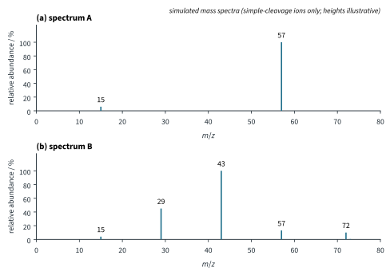
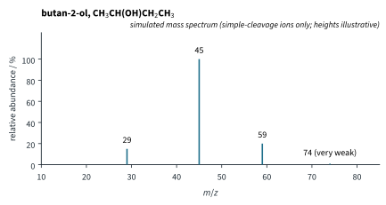
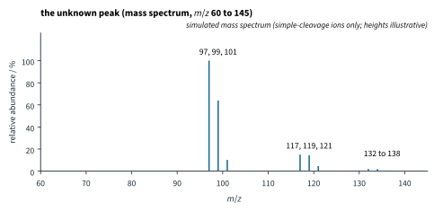

Mass Spectrometry and Structure Solving 1 Tutorial
Chapter H3.4 · Mass Spectrometry and Structure Solving Tutorial 1
On this page
Use relative atomic masses H 1, C 12, N 14, O 16, 35Cl and 37Cl, 79Br and 81Br for the m/z of ions, and the isotope abundances 13C 1.1 %, 35Cl : 37Cl about 3 : 1, 79Br : 81Br about 1 : 1 (literature values). Mass spectra are simulated: they show only ions formed by simple cleavage and the 13C peak of the molecular ion, and peak heights are illustrative. Marks are shown in square brackets.
Question 1
This question is about the mass spectrum of methanol, CH3OH.
- Write an equation, with state symbols, for the formation of the molecular ion of methanol in a mass spectrometer. [1]
- State the m/z of the molecular ion, and explain why it is equal to the Mr of methanol. [2]
- The base peak of the spectrum is at m/z 31. Identify the ion responsible, and write an equation for its formation from the molecular ion. [2]
- Explain why the other product of the reaction in (c) gives no peak in the spectrum. [2]
Question 2
A compound Y is either a hydrocarbon or a ketone. Its mass spectrum has a molecular ion peak at m/z 86 with a height of 15.0, and a peak at m/z 87 with a height of 1.00.
- Explain why there is a peak at m/z 87. [2]
- Calculate the number of carbon atoms in a molecule of Y. Show your working. [2]
- Hence decide whether Y is C6H14 or C5H10O (both have Mr 86). Explain your answer. [2]
Question 3
Three compounds X, Y and Z all give a molecular ion peak at m/z 72. They are pentane, C5H12; butanone, C4H8O; and propenoic acid, C3H4O2, in some order. The heights of their M and M+1 peaks are:
| Compound | height at m/z 72 | height at m/z 73 |
|---|---|---|
| X | 10.0 | 0.56 |
| Y | 30.0 | 1.34 |
| Z | 40.0 | 1.33 |
- Calculate the number of carbon atoms in each compound. [3]
- Hence identify X, Y and Z. [3]
Question 4
The table gives the main peaks in the simulated mass spectra of four halogen compounds. The ratios are the relative heights of the peaks in each cluster.
| Compound | Peaks (m/z, with ratio) |
|---|---|
| bromomethane, CH3Br | 94, 96 (1 : 1); 15 |
| 1,2-dichloroethane, ClCH2CH2Cl | 98, 100, 102 (9 : 6 : 1); 63, 65 (3 : 1); 49, 51 (3 : 1) |
| dibromomethane, CH2Br2 | 172, 174, 176 (1 : 2 : 1); 93, 95 (1 : 1) |
| chlorobenzene, C6H5Cl | 112, 114 (3 : 1); 77 |
- For the molecular ion of each compound, state how the pattern of peaks shows the number and type of halogen atoms present. [4]
- Identify the ions at m/z 63 and 65 from 1,2-dichloroethane and at m/z 93 and 95 from dibromomethane, and the radical lost in each case. [2]
- Explain why the peak at m/z 77 from chlorobenzene is a single peak, not a pair. [2]
Question 5 (Further example)
Bromodichloromethane, CHBrCl2, is one of the by-products formed when drinking water is treated with chlorine.
- Its molecular ion gives four peaks, at m/z 162, 164, 166 and 168. Show that the heights of these peaks are close to the ratio 9 : 15 : 7 : 1. [4]
- Predict the m/z values, and the approximate ratio of heights, of the clusters given by the fragment ions CHCl2+ and CHBrCl+. [2]
Question 6
The simulated mass spectrum of 2-methylpropane, (CH3)3CH, shows a small peak at m/z 58, the base peak at m/z 43 and a small peak at m/z 15.
- Identify the ions at m/z 58, 43 and 15. [2]
- Write an equation for the formation of the ion at m/z 43 from the molecular ion. [2]
- Explain why the peak at m/z 43 is so much taller than the peak at m/z 15. [2]
Question 7
Fig 1 shows the simulated mass spectra of the two isomers of C5H12 named pentane, CH3CH2CH2CH2CH3, and 2,2-dimethylpropane, C(CH3)4.

- Decide which spectrum belongs to which isomer. Give your reasons, identifying the ions at m/z 57, 43 and 29. [4]
- Write an equation for the formation of the ion at m/z 57 from 2,2-dimethylpropane, and explain why this ion is so stable. [2]
- Suggest why there is no molecular ion peak in one of the spectra. [2]
Question 8
Fig 2 shows the simulated mass spectrum of butan-2-ol, CH3CH(OH)CH2CH3.

- Identify the ions at m/z 59 and 45, and the radical lost in forming each from the molecular ion. [3]
- Write equations for the formation of these two ions. [2]
- Explain why the peak at m/z 45 is taller than the peak at m/z 59. [2]
Question 9 (Further example)
Read the passage and answer the questions that follow.
- Explain why the labelled caffeine behaves in the same way as caffeine in the instrument, yet can be measured separately. [2]
- Explain why a standard three units heavier is used, rather than one containing a single 13C atom. [2]
- Calculate the mass of caffeine in 1.00 cm3 of the drink, and its concentration in mg dm−3. [3]
Question 10 (Further example)
Read the passage and answer the questions that follow.

- Show that a molecular ion containing three Cl atoms gives four peaks in a ratio close to 27 : 27 : 9 : 1, and that this agrees with the data. [3]
- Identify the ions at m/z 117 and 97, and the radical lost in forming each. [2]
- Draw the structures of 1,1,1-trichloroethane and its isomer 1,1,2-trichloroethane. Explain why the isomer would give a cluster at m/z 83, 85 and 87 but no peak at 117. [2]
- Explain why the analyst still injects an authentic sample of 1,1,1-trichloroethane, and state how the 1H NMR spectra of the two isomers would differ. [2]